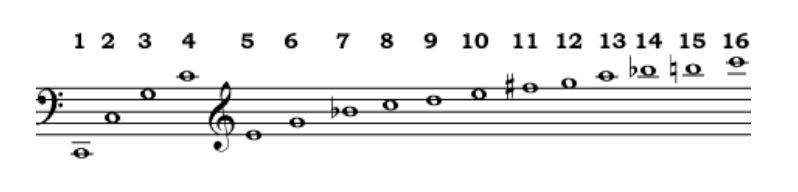
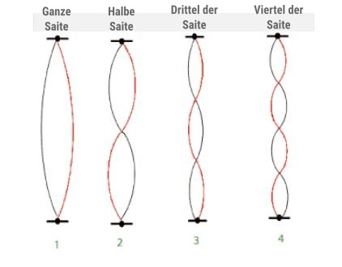
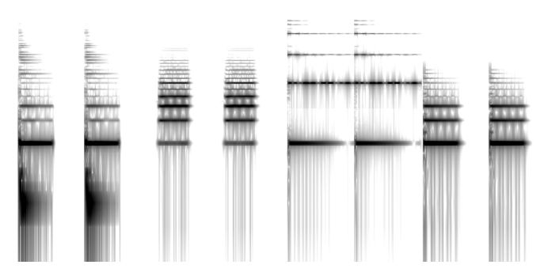
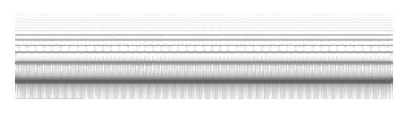

Harmonische Reihe, Wellenform
Die harmonische Reihe ist für den Charakter eines Klangs verantwortlich. Die Präsenz und Stärke jeder Oberschwingung bestimmen diesen Charakter. Bei gleicher Kraft und Spannung vibrieren kurze Saiten schneller als lange. Eine Saite, die normalerweise mit 100 Hz vibriert, halbiert sich (zum Beispiel durch Drücken des Fingers auf das Griffbrett an der Hälfte der Länge) und vibriert dann doppelt so schnell, nämlich mit 200 Hz. Wenn Sie sie auf ein Drittel ihrer ursprünglichen Länge verkürzen, indem Sie den Finger höher drücken, wird sie dreimal so schnell vibrieren oder 300 Hz. Eine Verkürzung auf ein Viertel erzeugt eine viermal schnellere Frequenz; 400 Hz. Durch solche Teilungen einer Saite entstehen Obertöne. Obertöne bilden die Grundlage für die Tonstufen der westlichen Musik. Die folgende Abbildung zeigt die Tonhöhen, die jeder oberen Oberschwingung entsprechen. Das tiefste C liegt bei etwa 65 Hz, dann folgt 130, dann 195, 260 (mittleres C), 325, 390, 455, 520, 585, 650, 715, 780, 845, 910, 975, 1040:

Die meisten Saiten (und Klangkörper von Musikinstrumenten) schwingen gleichzeitig bei all diesen Frequenzen. Während eine Saite bei ihrer vollen Länge schwingt, schwingt sie auch in Hälften (siehe die Abbildung unten - beachten Sie, dass all diese Bewegungen gleichzeitig stattfinden):

Diese halbe Schwingungsbewegung ist doppelt so schnell. Sie schwingt auch in Dritteln, Vierteln, Fünfteln usw. Eine einzelne Saite, die bei 65 Hz schwingt, erzeugt also auch die Frequenzen 130, 195 usw.
Die Klangfarbe besteht nicht nur aus der Präsenz, sondern auch aus der Amplitude dieser Obertöne. Jeder der Obertöne kann in einer Computerumgebung durch eine Sinuswelle repräsentiert werden. Als Faustregel haben die höheren Obertöne eine geringere Amplitude, jedoch variiert die tatsächliche Amplitude jedes Obertons je nach Klangfarbe. Die Präsenz und Amplitude der oberen Obertöne bilden den klanglichen Fingerabdruck eines jeden Klangs. Eine Violine kann beispielsweise einen stärkeren dritten Oberton, einen schwächeren vierten, keinen fünften und einen schwachen sechsten haben, während eine Posaune einen schwachen dritten, einen starken vierten und so weiter haben wird.
Unten sind Sonogramme verschiedener Musikinstrumente zu sehen, die jeweils zwei Noten spielen (Wiederholung derselben Note). Beachten Sie die unterschiedlichen Ansammlungen von Obertönen. 
Additive Synthese
Als eine Aufgabe zur Additiven Synthese möchten wir eine Sägezahnwelle erstellen. Unten sehen Sie ein Sonogramm einer Sägezahnwelle und ihren Obertönen:  Um diesen Sägezahn zu rekonstruieren, benötigen wir einzelne Sinuswellen, die harmonisch sind oder Vielfache der Grundfrequenz. Hier ist eine erste grobe Version, aufgebaut auf einer Grundfrequenz von 200. Das Hinzufügen von 12 Sinuswellen würde normalerweise zu Verzerrungen führen, daher werden sie alle um 0,1 skaliert.
(
{
(
SinOsc.ar(200) + SinOsc.ar(400) + SinOsc.ar(600) +
SinOsc.ar(800) + SinOsc.ar(1000) + SinOsc.ar(1200) +
SinOsc.ar(1400) + SinOsc.ar(1600) + SinOsc.ar(1800) +
SinOsc.ar(2000) + SinOsc.ar(2200) + SinOsc.ar(2400)
) * 0.1
}.scope
)
Und hier unternehmen wir noch eine Modifikation: Wir justieren die Amplituden der einzelnen Wellenschichten (Obertöne) individuell und proportional zu den Obertonnummern. Das bedeutet, der zweite Oberton ist halb so stark wie die Grundfrequenz, der dritte ein Drittel so stark usw.
(
{
(
SinOsc.ar(200: mul: 1) + SinOsc.ar(400, mul: 1/2) +
SinOsc.ar(600, mul: 1/3) +
SinOsc.ar(800, mul: 1/4) + SinOsc.ar(1000, mul: 1/5) +
SinOsc.ar(1200, mul: 1/6) +
SinOsc.ar(1400, mul: 1/7) + SinOsc.ar(1600, mul: 1/8) +
SinOsc.ar(1800, mul: 1/9) +
SinOsc.ar(2000, mul: 1/10) + SinOsc.ar(2200, mul: 1/11) +
SinOsc.ar(2400, mul: 1/12)
) * 0.1
}.scope
)
In der nächsten Version überlassen wir die Berechnung der Obertöne dem Computer: Dafür nutzen wir eine Variable für die Grundfrequenz und multiplizieren diese einfach mit den Obertonnummern. Wir packen die Obertöne außerdem in ein Array, um sie zwischen den ersten 12 Ausgangsbussen zu verteilen. Auch wenn wir wahrscheinlich keine 12 Ausgänge an unserem Rechner angeschlossen haben, können wir diese im Stethoskop gut betrachten.
(
{
var f = 200; // Die Grundfrequenz
[
SinOsc.ar(f*1: mul: 1) + SinOsc.ar(f*2, mul: 1/2) +
SinOsc.ar(f*3, mul: 1/3) +
SinOsc.ar(f*4, mul: 1/4) + SinOsc.ar(f*5, mul: 1/5) +
SinOsc.ar(f*6, mul: 1/6) +
SinOsc.ar(f*7, mul: 1/7) + SinOsc.ar(f*8, mul: 1/8) +
SinOsc.ar(f*9, mul: 1/9) +
SinOsc.ar(f*10, mul: 1/10) + SinOsc.ar(f*11, mul: 1/11) +
SinOsc.ar(f*12, mul: 1/12)
]
}.scope(numChannels: 12)
)
???
(
{
var speed = 14; // Amplitudenveränderungsgeschwindigkeit
var f = 200; // Die Grundfrequenz
Mix.ar([
SinOsc.ar(f*1: mul: LFNoise1.kr(rrand(speed, spped*2), 0.5, 0.5)/1),
SinOsc.ar(f*2: mul: LFNoise1.kr(rrand(speed, spped*2), 0.5, 0.5)/2),
SinOsc.ar(f*3: mul: LFNoise1.kr(rrand(speed, spped*2), 0.5, 0.5)/3),
SinOsc.ar(f*4: mul: LFNoise1.kr(rrand(speed, spped*2), 0.5, 0.5)/4),
SinOsc.ar(f*5: mul: LFNoise1.kr(rrand(speed, spped*2), 0.5, 0.5)/5),
SinOsc.ar(f*6: mul: LFNoise1.kr(rrand(speed, spped*2), 0.5, 0.5)/6),
SinOsc.ar(f*7: mul: LFNoise1.kr(rrand(speed, spped*2), 0.5, 0.5)/7),
SinOsc.ar(f*8: mul: LFNoise1.kr(rrand(speed, spped*2), 0.5, 0.5)/8),
SinOsc.ar(f*9: mul: LFNoise1.kr(rrand(speed, spped*2), 0.5, 0.5)/9),
SinOsc.ar(f*10: mul: LFNoise1.kr(rrand(speed, spped*2), 0.5, 0.5)/10),
SinOsc.ar(f*11: mul: LFNoise1.kr(rrand(speed, spped*2), 0.5, 0.5)/11),
SinOsc.ar(f*12: mul: LFNoise1.kr(rrand(speed, spped*2), 0.5, 0.5)/12),
]) * 0.5
}.scope(numChannels: 1)
)
Übung Versuchen Sie, im obigen Beispiel die Geschwindigkeit der Amplitudenänderung speed zu variieren. Beobachten Sie, wie sich entsprechend die Klangfarbe verhält. Ersetzen Sie außerdem die Grundfrequenz durch einen anderen Controller, wie zum Beispiel SinOsc, die Maus oder ein LFNoise, und beobachten Sie die Veränderungen im Klang.
Next we are going to add an envelope. We could replace the last *0.5 with a single envelope to control the amplitude of all the oscillators at once. And that's how most synthesizers with limited modules do it. But since we are working with code we can assign an envelope to each oscillator, making each harmonic independent, resulting in a more natural sound.
(
{
var g = Impulse.kr(1/3); // Hüllkurvenschranke (gate)
var f = 200; // Die Grundfrequenz
Mix.ar([
SinOsc.ar(f*1: mul: EnvGen.kr(Env.perc(releaseTime: 1.4), g)/1),
SinOsc.ar(f*2: mul: EnvGen.kr(Env.perc(releaseTime: 1.1), g)/2),
SinOsc.ar(f*3: mul: EnvGen.kr(Env.perc(releaseTime: 2), g)/3),
SinOsc.ar(f*4: mul: EnvGen.kr(Env.perc(releaseTime: 1), g)/4),
SinOsc.ar(f*5: mul: EnvGen.kr(Env.perc(releaseTime: 1.8), g)/5),
SinOsc.ar(f*6: mul: EnvGen.kr(Env.perc(releaseTime: 2.9), g)/6),
SinOsc.ar(f*7: mul: EnvGen.kr(Env.perc(releaseTime: 4), g)/7),
SinOsc.ar(f*8: mul: EnvGen.kr(Env.perc(releaseTime: 0.3), g)/8),
SinOsc.ar(f*9: mul: EnvGen.kr(Env.perc(releaseTime: 1), g)/9),
SinOsc.ar(f*10: mul: EnvGen.kr(Env.perc(releaseTime: 3.6), g)/10),
SinOsc.ar(f*11: mul: EnvGen.kr(Env.perc(releaseTime: 2.3), g)/11),
SinOsc.ar(f*12: mul: EnvGen.kr(Env.perc(releaseTime: 1.1), g)/12),
]) * 0.5
}.scope(numChannels: 1)
)
Unten sind ein paar Hinweise, wie wir den oben stehenden (langatmigen) Code etwas kompakter ausdrücken könnten. Wenn Sie sich an die Multi-Array-Expansion vom Wintersemester erinnern, wissen Sie bereits, dass ein UGen mit einem Array-Argument zu einem Array mit Kopien des UGens und entsprechenden Parametern für jedes UGen expandiert wird. Das Mix-UGen hingegen kombiniert alle UGens in seinem Array-Argument zusammen, sodass wir am Ende aus einem Array von UGens ein einziges Signal (die Summe der UGens) erhalten. Mit diesem Wissen kann man erkennen, dass folgende Zeile:
Mix.ar([SinOsc.ar(200), SinOsc.ar(400), SinOsc.ar(600)])
auch so geschrieben werden kann:
Mix.ar(SinOsc.ar([200, 400, 600]))
Hier sind zur Wiederholung ein paar weitere Techniken, wie wir bequem Arrays erstellen können:
Und dementsprechend können wir das Additive-Synthese-Beispiel oben wie folgt ausdrücken:
(
{
f = 100;
t = Impulse.kr(1/3);
Mix.ar(
SinOsc.ar(
f*(1..12),
mul: EnvGen.kr(
Env.perc(0, 1),
t,
levelScale: 1/(1..12),
// könnte auch geschrieben werden als: rrand(1.0, 3.0).dup(12)
timeScale: [1.4, 1.1, 2, 1, 1.8, 2.9, 4, 0.3, 1, 3.6, 2.3, 1.1]
)
)
) * 0.5
}.scope(1)
)
Zum Abschluss und zur Unterhaltung erstellen wir zwei Varianten, bei denen wir die einzelnen Wellen zufällig zwischen dem linken und rechten Kanal (oder auch irgendwo dazwischen) verteilen. Dies geschieht mit dem Pan2 UGen. Führen Sie die folgenden Blocks mehrmals aus, um den Unterschied zu hören:
(
var knums = [ 55, 56, 59, 60, 62, 63, 65, 67, 68, 71, 72 ];
{
Mix.ar(
Pan2.ar(
SinOsc.ar(
freq: knums.midicps,
mul: LFNoise1.kr(rrand(0.1, 0.5).dup(8), 0.5, 0.5)
),
{1.0.rand2}.dup(knums.size)
)
) * 0.2
}.play
)
(
var harmonics = 16, fund = TChoose.kr(Dust.kr(0.5), Array.series(6, 30, 7));
{
Mix.fill(
harmonics,
{
arg count;
Pan2.ar(
FSinOsc.ar(
fund * (count + 1),
mul: FSinOsc.kr(rrand(1/3, 1/6), mul: 0.5, add: 0.5 )
),
1.0.rand2)
}
) / (2 * harmonics)
}.play;
)
Nicht harmonische Spektren (inharmonische Spektren)
In den obigen Beispielen ist jede der Sinusschwingungen ein Vielfaches des Grundtons (f, 2f, 3f, 4f usw.). Dies ergibt ein harmonisches Spektrum. Die meisten gestimmten Instrumente haben harmonische Spektren. Andere Instrumente hingegen wie Gongs, Glocken und Becken tendieren zu inharmonischen Spektren, d.h. zu einer Reihe von Frequenzen, die keine Vielfachen des Grundtons sind. Um ein inharmonisches Spektrum zu erzeugen, müssen für jede Sinusschwingung nicht zusammenhängende Werte eingegeben werden, z. B. 135, 173, 239, 267, 306, 355, 473, 512, 572 und 626. In den obigen Beispielen wurde die Amplitude jedes oberen Obertons in Bezug auf seine Position berechnet; höhere Obertöne waren leiser. Bei inharmonischen Spektren haben die Amplituden jedoch kein Muster. Zum Beispiel 0,25, 0,11, 0,12, 0,04, 0,1, 0,15, 0,05, 0,01, 0,03, 0,02 und 0,12. Hier ist ein Patch, der die Frequenzen und Amplituden aus meinem zufälligen Prozess zusammenaddiert. Es gibt eine Hüllkurve, daher erhalten Sie das Gefühl einer Glocke, und es hat eine sehr metallische Resonanz:
(
{
Mix.ar(
Pan2.ar(
SinOsc.ar(
freq: Array.exprand(16, 40, 4000),
mul: Array.rand(16, 0.1, 1),
) *
EnvGen.kr(Env.perc(releaseTime: 4), levelScale: 0.15, doneAction: 2),
1.0.rand2
)
)
}.play
)
Übung Definieren Sie einen Synthesizer, der den oben beschriebenen Klang der Additivsynthese hat. Verwenden Sie dann den Synthesizer, um verschiedene Dur-/Mollakkorde zu spielen.
(Tipp: die Funktion midicps wandelt eine MIDI-Nummer in die entsprechende Frequenz um.)